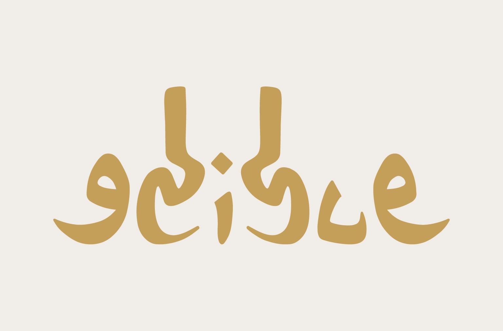
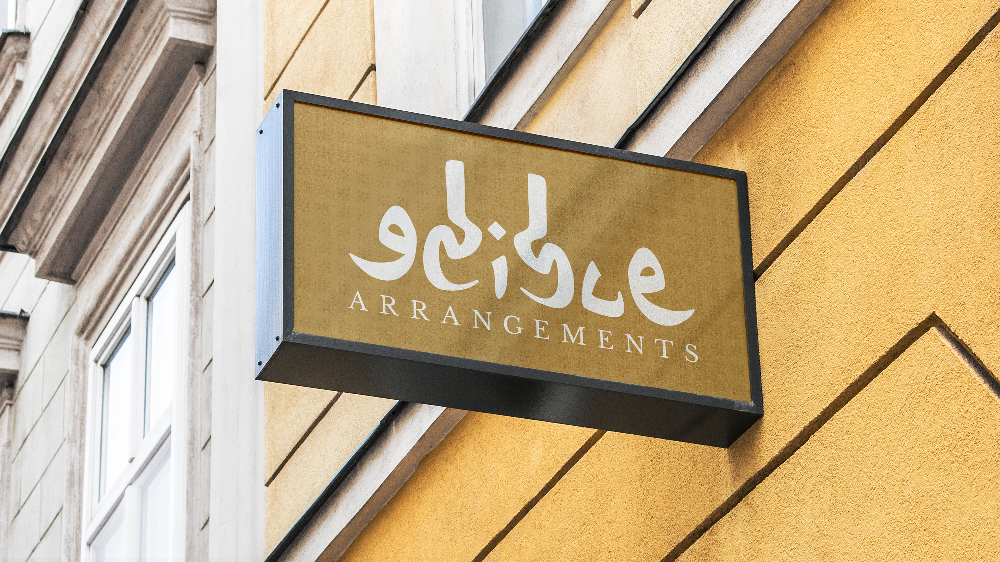
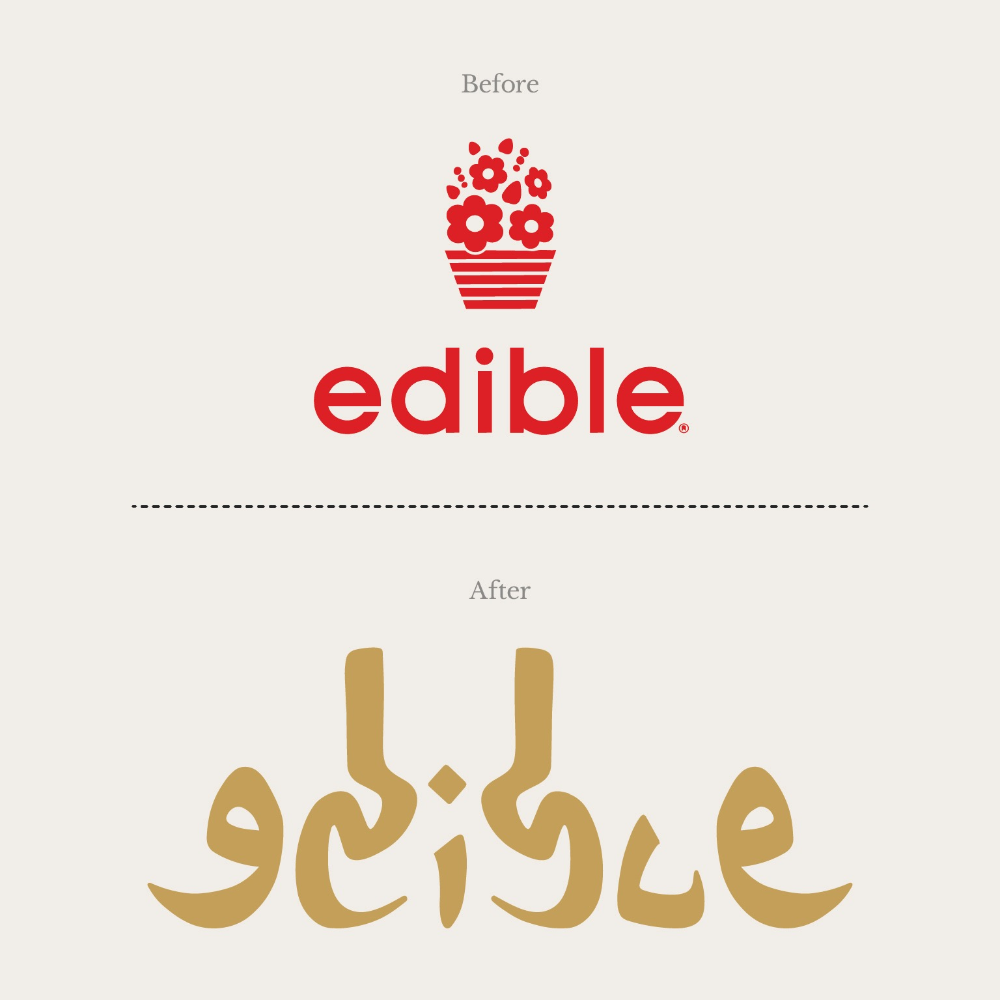
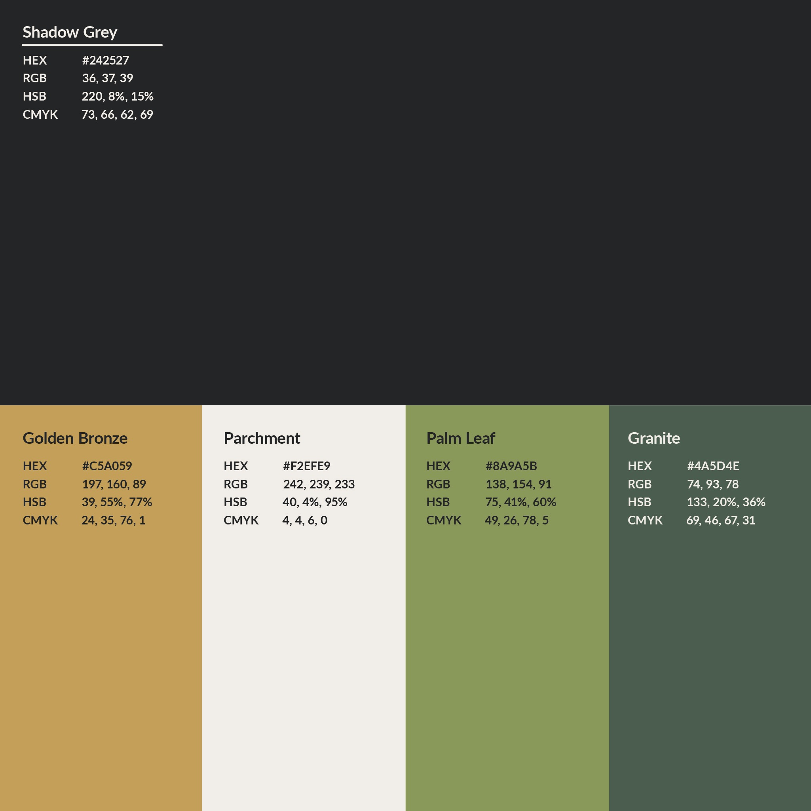
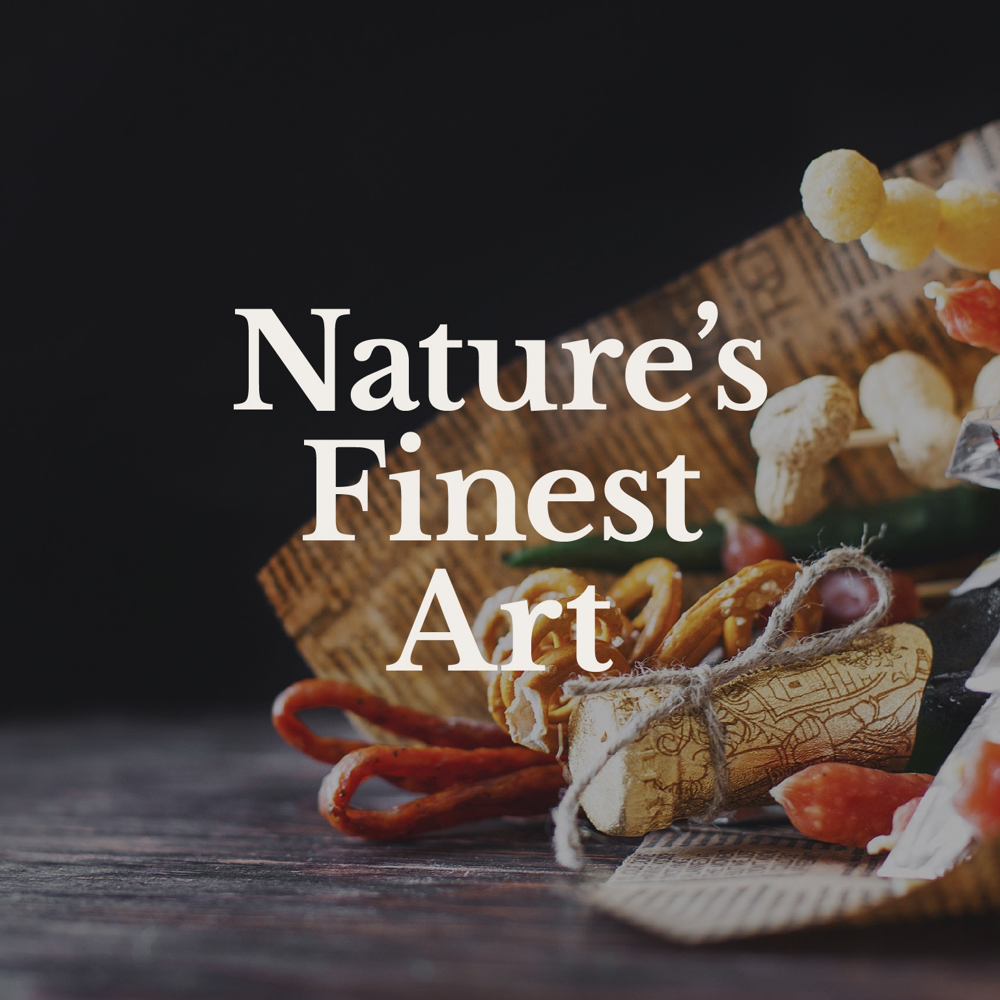
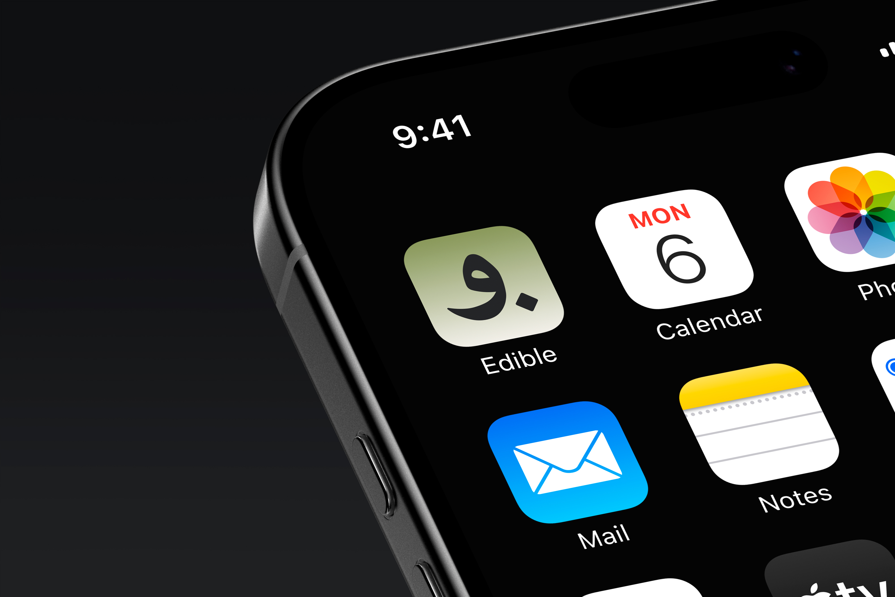

Edible Arrangements Redesign
Since starting in 1999, Edible has grown into the world's leading provider of fresh fruit arrangements and an iconic household name in the gifting world. Over the years, their culinary offerings expanded far beyond the classic fruit bouquet to include artisan chocolates, fresh baked treats, and handcrafted floral combinations.
The mission was to give the brand a complete visual makeover, turning their identity into a luxurious, year-round gifting experience with a refined logo, a warm and appetizing color palette, and top-tier packaging.


Logomark Evolution & Color System
At the heart of the rebrand is an organic, sculpted emblem that unifies the silhouette of fresh fruit and blooming petals into a single continuous contour. The redesigned mark moves away from nostalgic cartoon motifs toward an upscale, timeless emblem suited for luxury gift packaging.


Luxury Packaging Experience
Gifting is fundamentally tactile. The packaging suite was designed to make unboxing as delightful as the treats inside. High-caliper rigid gift boxes, custom embossed patterns, and metallic accents give each arrangement the gravitas of a bespoke luxury gift.


Brand System & Digital Touchpoints
From secondary seals to mobile digital interfaces, the identity maintains consistency and warmth across every customer interaction. The mobile icon and typographic standards ensure the rebrand scales seamlessly from handheld screens to retail store displays.


The reimagined Edible identity successfully repositions the company from an occasional holiday fruit bouquet novelty into an everyday luxury destination for premium gifting, artisan sweets, and fresh bouquets.
By pairing warm, appetizing tones with clean typographic craftsmanship and refined gift packaging, the brand honors its rich 1999 heritage while charting an elevated, contemporary path forward.
Every touchpoint, from physical storefront signage to digital unboxing notifications, now delivers on a single promise: unforgettable gifts crafted with care.